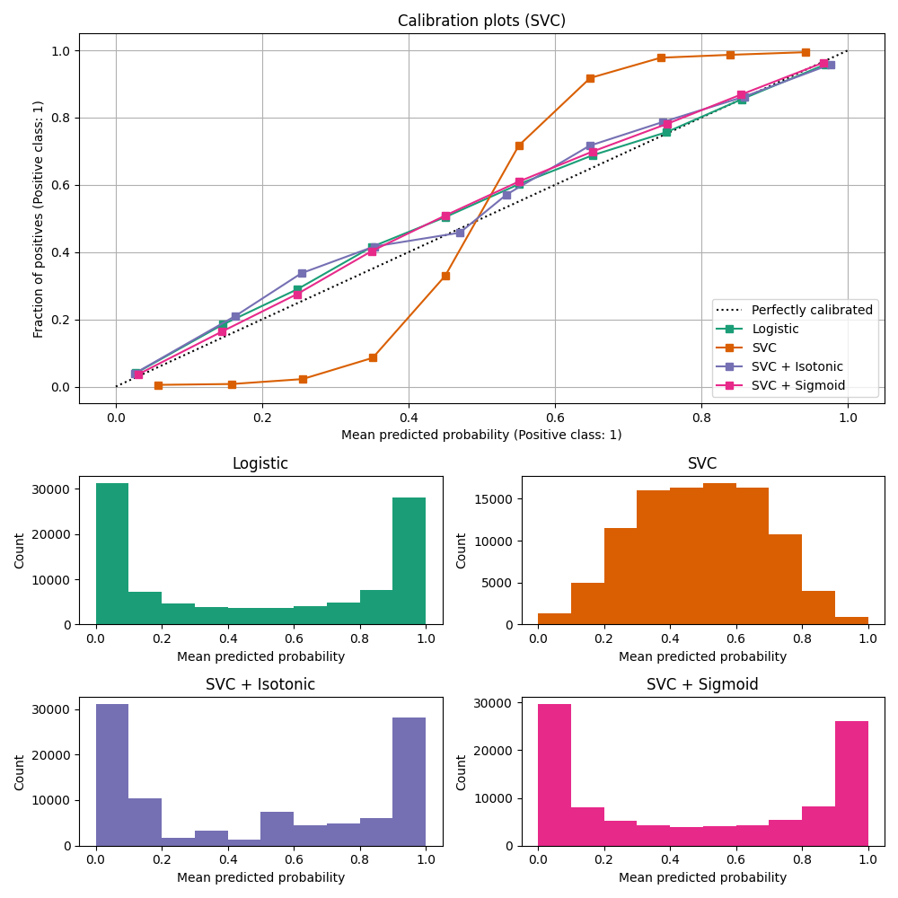

Note
Click here to download the full example code or to run this example in your browser via Binder
Probability Calibration curves¶
When performing classification one often wants to predict not only the class label, but also the associated probability. This probability gives some kind of confidence on the prediction. This example demonstrates how to display how well calibrated the predicted probabilities are and how to calibrate an uncalibrated classifier.
The experiment is performed on an artificial dataset for binary classification with 100,000 samples (1,000 of them are used for model fitting) with 20 features. Of the 20 features, only 2 are informative and 10 are redundant. The first figure shows the estimated probabilities obtained with logistic regression, Gaussian naive Bayes, and Gaussian naive Bayes with both isotonic calibration and sigmoid calibration. The calibration performance is evaluated with Brier score, reported in the legend (the smaller the better). One can observe here that logistic regression is well calibrated while raw Gaussian naive Bayes performs very badly. This is because of the redundant features which violate the assumption of feature-independence and result in an overly confident classifier, which is indicated by the typical transposed-sigmoid curve.
Calibration of the probabilities of Gaussian naive Bayes with isotonic regression can fix this issue as can be seen from the nearly diagonal calibration curve. Sigmoid calibration also improves the brier score slightly, albeit not as strongly as the non-parametric isotonic regression. This can be attributed to the fact that we have plenty of calibration data such that the greater flexibility of the non-parametric model can be exploited.
The second figure shows the calibration curve of a linear support-vector classifier (LinearSVC). LinearSVC shows the opposite behavior as Gaussian naive Bayes: the calibration curve has a sigmoid curve, which is typical for an under-confident classifier. In the case of LinearSVC, this is caused by the margin property of the hinge loss, which lets the model focus on hard samples that are close to the decision boundary (the support vectors).
Both kinds of calibration can fix this issue and yield nearly identical results. This shows that sigmoid calibration can deal with situations where the calibration curve of the base classifier is sigmoid (e.g., for LinearSVC) but not where it is transposed-sigmoid (e.g., Gaussian naive Bayes).

- 
Out:
Logistic:
Brier: 0.099
Precision: 0.872
Recall: 0.851
F1: 0.862
Naive Bayes:
Brier: 0.118
Precision: 0.857
Recall: 0.876
F1: 0.867
Naive Bayes + Isotonic:
Brier: 0.098
Precision: 0.883
Recall: 0.836
F1: 0.859
Naive Bayes + Sigmoid:
Brier: 0.109
Precision: 0.861
Recall: 0.871
F1: 0.866
Logistic:
Brier: 0.099
Precision: 0.872
Recall: 0.851
F1: 0.862
SVC:
Brier: 0.163
Precision: 0.872
Recall: 0.852
F1: 0.862
SVC + Isotonic:
Brier: 0.100
Precision: 0.853
Recall: 0.878
F1: 0.865
SVC + Sigmoid:
Brier: 0.099
Precision: 0.874
Recall: 0.849
F1: 0.861
print(__doc__)
# Author: Alexandre Gramfort <alexandre.gramfort@telecom-paristech.fr>
# Jan Hendrik Metzen <jhm@informatik.uni-bremen.de>
# License: BSD Style.
import matplotlib.pyplot as plt
from sklearn import datasets
from sklearn.naive_bayes import GaussianNB
from sklearn.svm import LinearSVC
from sklearn.linear_model import LogisticRegression
from sklearn.metrics import (brier_score_loss, precision_score, recall_score,
f1_score)
from sklearn.calibration import CalibratedClassifierCV, calibration_curve
from sklearn.model_selection import train_test_split
# Create dataset of classification task with many redundant and few
# informative features
X, y = datasets.make_classification(n_samples=100000, n_features=20,
n_informative=2, n_redundant=10,
random_state=42)
X_train, X_test, y_train, y_test = train_test_split(X, y, test_size=0.99,
random_state=42)
def plot_calibration_curve(est, name, fig_index):
"""Plot calibration curve for est w/o and with calibration. """
# Calibrated with isotonic calibration
isotonic = CalibratedClassifierCV(est, cv=2, method='isotonic')
# Calibrated with sigmoid calibration
sigmoid = CalibratedClassifierCV(est, cv=2, method='sigmoid')
# Logistic regression with no calibration as baseline
lr = LogisticRegression(C=1.)
fig = plt.figure(fig_index, figsize=(10, 10))
ax1 = plt.subplot2grid((3, 1), (0, 0), rowspan=2)
ax2 = plt.subplot2grid((3, 1), (2, 0))
ax1.plot([0, 1], [0, 1], "k:", label="Perfectly calibrated")
for clf, name in [(lr, 'Logistic'),
(est, name),
(isotonic, name + ' + Isotonic'),
(sigmoid, name + ' + Sigmoid')]:
clf.fit(X_train, y_train)
y_pred = clf.predict(X_test)
if hasattr(clf, "predict_proba"):
prob_pos = clf.predict_proba(X_test)[:, 1]
else: # use decision function
prob_pos = clf.decision_function(X_test)
prob_pos = \
(prob_pos - prob_pos.min()) / (prob_pos.max() - prob_pos.min())
clf_score = brier_score_loss(y_test, prob_pos, pos_label=y.max())
print("%s:" % name)
print("\tBrier: %1.3f" % (clf_score))
print("\tPrecision: %1.3f" % precision_score(y_test, y_pred))
print("\tRecall: %1.3f" % recall_score(y_test, y_pred))
print("\tF1: %1.3f\n" % f1_score(y_test, y_pred))
fraction_of_positives, mean_predicted_value = \
calibration_curve(y_test, prob_pos, n_bins=10)
ax1.plot(mean_predicted_value, fraction_of_positives, "s-",
label="%s (%1.3f)" % (name, clf_score))
ax2.hist(prob_pos, range=(0, 1), bins=10, label=name,
histtype="step", lw=2)
ax1.set_ylabel("Fraction of positives")
ax1.set_ylim([-0.05, 1.05])
ax1.legend(loc="lower right")
ax1.set_title('Calibration plots (reliability curve)')
ax2.set_xlabel("Mean predicted value")
ax2.set_ylabel("Count")
ax2.legend(loc="upper center", ncol=2)
plt.tight_layout()
# Plot calibration curve for Gaussian Naive Bayes
plot_calibration_curve(GaussianNB(), "Naive Bayes", 1)
# Plot calibration curve for Linear SVC
plot_calibration_curve(LinearSVC(max_iter=10000), "SVC", 2)
plt.show()
Total running time of the script: ( 0 minutes 1.630 seconds)